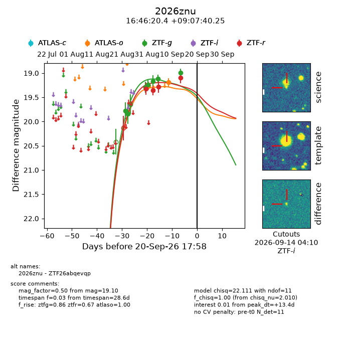
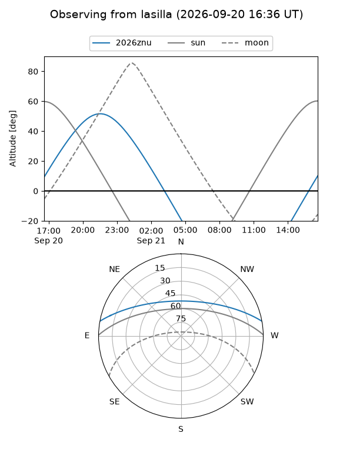
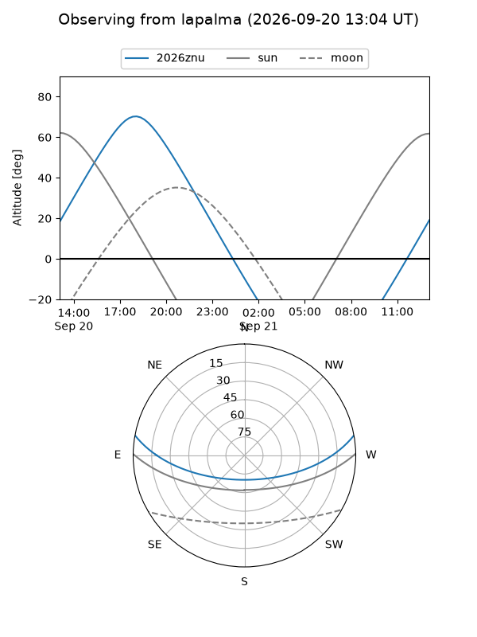
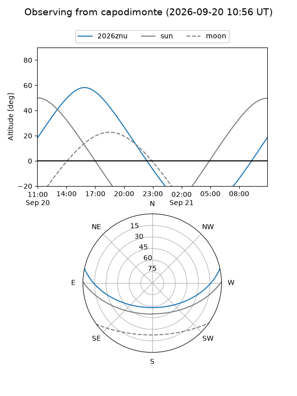
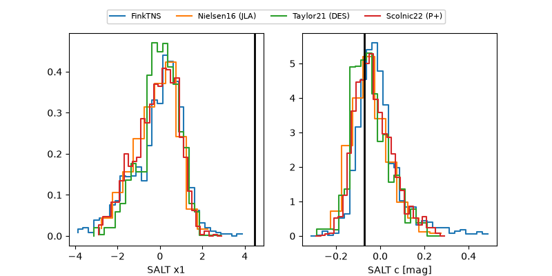

2026znu
Target 2026znu at 2026-09-21 05:40
Aliases and brokers:
FINK-ZTF: ztf.fink-portal.org/ZTF26abqevqp
Lasair-ZTF: lasair-ztf.lsst.ac.uk/objects/ZTF26abqevqp
ALeRCE-ZTF: alerce.online/object/ZTF26abqevqp
YSE-PZ: ziggy.ucolick.org/yse/transient_detail/2026znu
TNS name: wis-tns.org/object/2026znu
Direct TNS query: direct search
alt names
ZTF26abqevqp (ztf,fink_ztf)
2026znu (tns,yse)
Coordinates:
equatorial (ra, dec) = 251.5851,+9.12785
equatorial (HMS+DMS) = 16:46:20.42,+09:07:40.25
galactic (l, b) = (26.6741,+31.90495)
Flags:
TNS type: nan
peak dt: +13.9
Photometry:
last atlaso=19.19, ztfg=19.00, ztfr=19.10
2 atlaso, 8 ztfg, 4 ztfr detections
Lightcurve

Visibility



Additional plots
